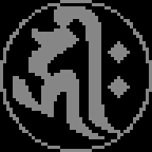
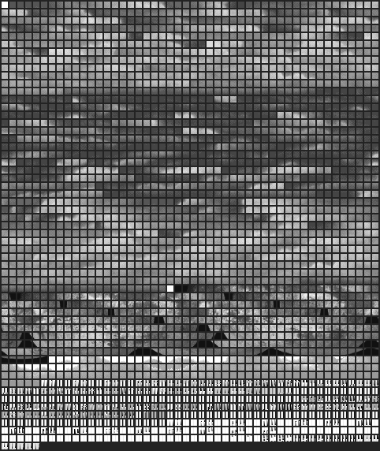
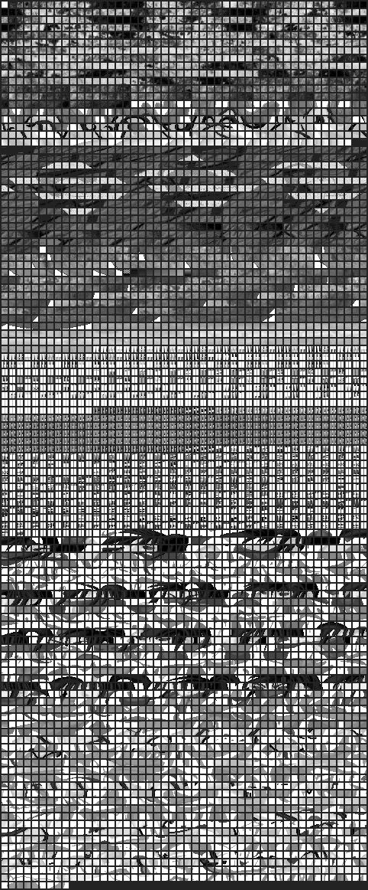
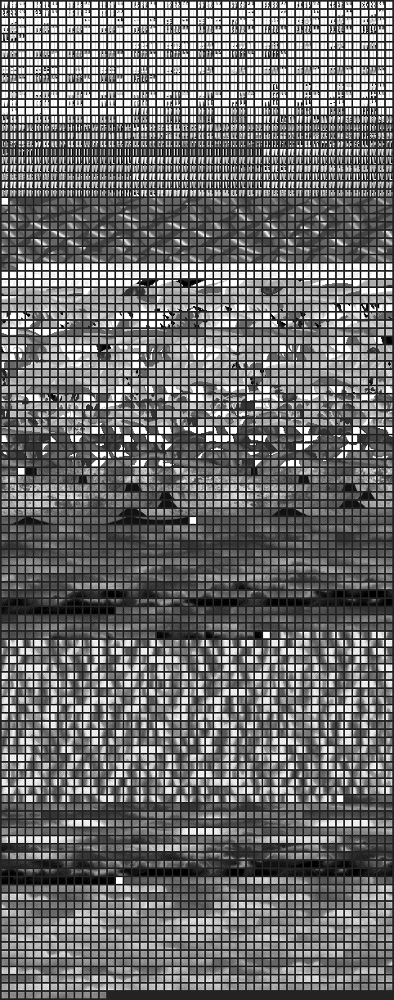

TARO.STB 415개 전체

415개 전량은 7개 연락표에서 확인. 이 화면은 0~63 미리보기. 실제 팔레트 색 미반영.
TARO.STB 전체 스프라이트 7페이지 보기 · JSON 근거: remaining_graphics_scope_20261022.json
415개 전량은 7개 연락표에서 확인. 이 화면은 0~63 미리보기. 실제 팔레트 색 미반영.
원형 문양. 원문과 출력 소비처가 확인되기 전 수정 금지.

원형 문양. 일본어 글자라는 판단도 미확정.

배경·패턴 중심의 타일 가설 이미지. 일본어 부재 판정 아님.

배경·패턴 중심의 타일 가설 이미지. 실제 화면 좌표 미확정.

배경 타일 가설 이미지. 번역 후보 확정 전 원본 보호.
주의: 흑백 또는 회색 이미지는 원본 팔레트 의미를 재현하지 않는다. 게임 화면 미검증이므로 텍스트가 없다고 확정하지 않으며, 미확인 글리프를 임의 한국어로 바꾸지 않는다. 유지 정책: HUD 心/体, 등급 1~9段/名人 원본 보존.